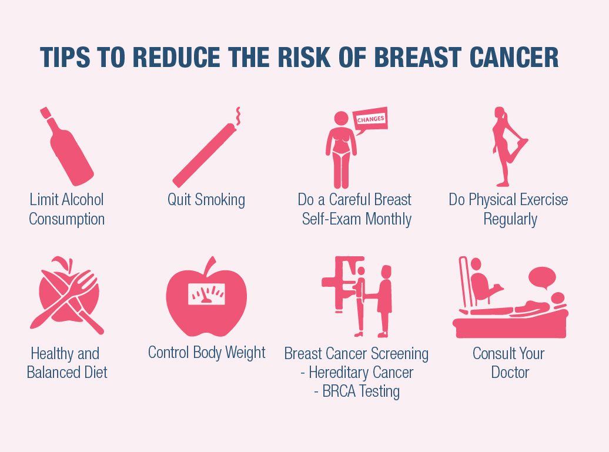
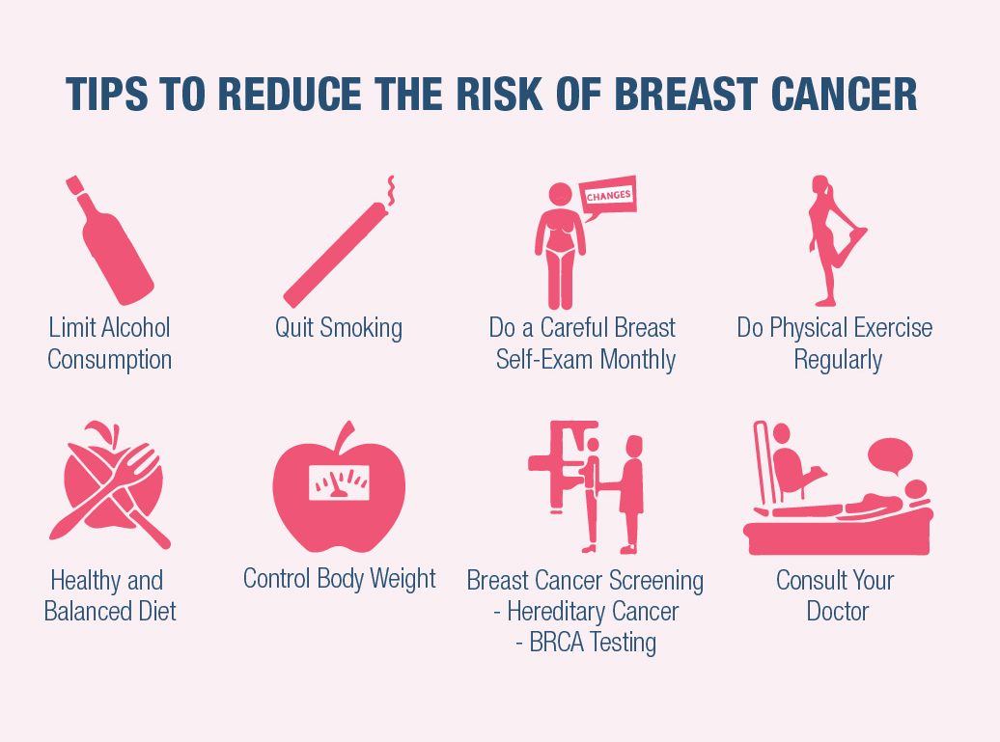
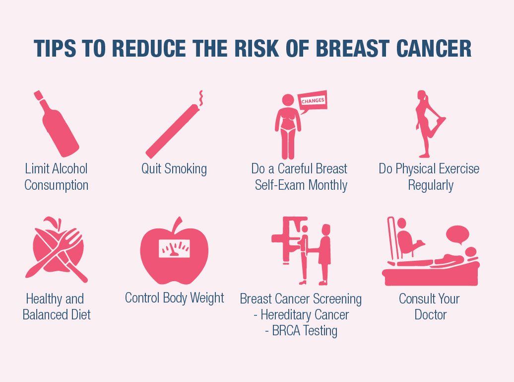

Welcome to Breast Cancer Awareness
Empowering individuals through knowledge, hope, and stories.
 

Empowering individuals through knowledge, hope, and stories.

Breast cancer is one of the most common cancers in the world. Early detection can save lives. Here, you can find resources, tools, and stories to inspire hope and fight against breast cancer. Remember, awareness and regular checkups are key.
Maria was diagnosed with breast cancer at the age of 35. Despite the challenges, she emerged stronger and is now an advocate for early detection. Her story is a beacon of hope for many women.
When James' wife was diagnosed, he became her rock. Together, they overcame the hurdles and now run a support group for families affected by cancer.
Meet the dedicated team behind this initiative: